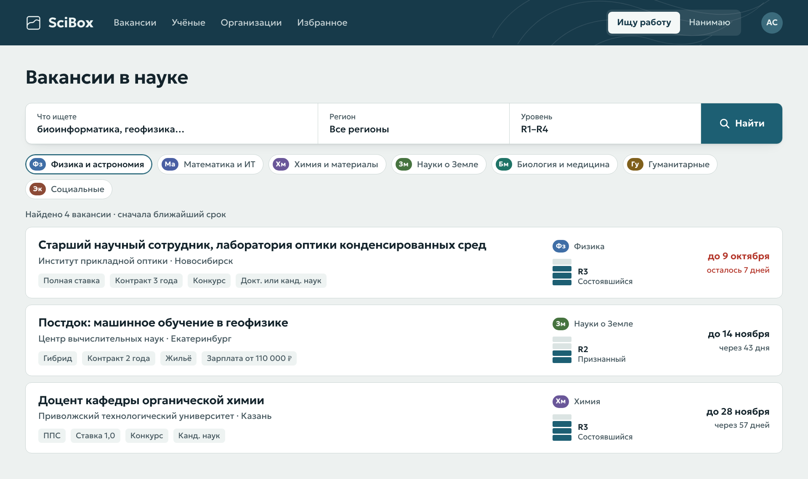
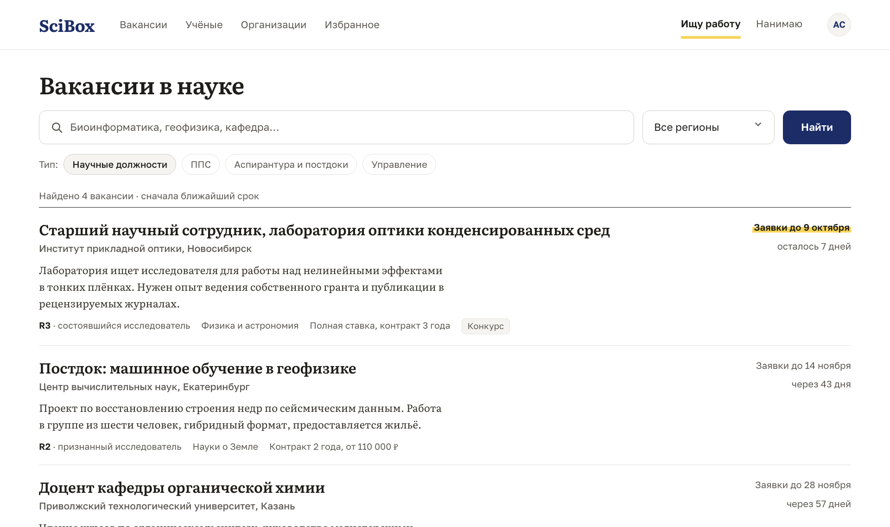
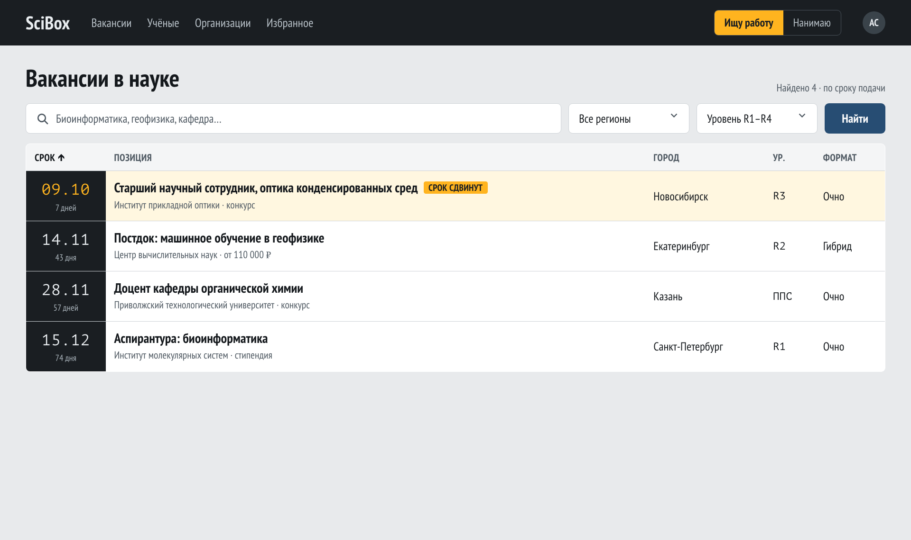

Три образца внешнего вида SciBox
Это одна и та же страница поиска с вымышленными вакансиями. Выбор делается на соседней вкладке «Выбор внешнего вида SciBox».
1. Карта и легенда (выпал по жребию)
Цветные ключи областей науки, колонка уровней R1–R4, красный только для сроков.

2. Журнал (мой выбор)
Вакансия как статья: книжный шрифт, аннотация, срок отмечен жёлтым маркером.

3. Табло сроков
Таблица по срокам подачи, тёмная колонка дат, изменённая строка подсвечена.
